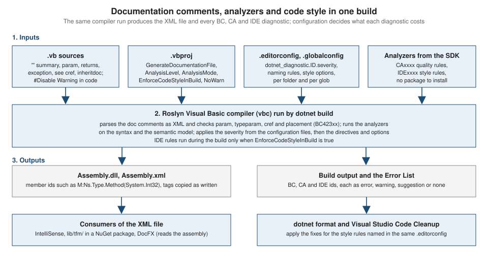

XML Documentation, Analyzers and Code Style
|
This content was generated with the assistance of AI and should be verified against the official documentation before being relied on in production. |
This page is written against Visual Basic 17.13 on .NET 10 (SDK 10.0.402) and was checked on 2026-10-19. Every example is a complete
project that was built and, where it has a Main, run in the .NET 10 SDK container (Linux, arm64); the compiler, analyzer and tool output
shown is real output. Examples that are meant to show diagnostics were built with TreatWarningsAsErrors off so that the warnings
print; the page says so next to each. The root namespace of all projects is ShelfDocs, which matters because member ids in the
documentation file include it. Visual Studio features (Code Cleanup, the Error List) need Windows and are described from the Microsoft
documentation, not run.
Three things keep a Visual Basic code base readable over years: comments that become documentation (a machine-readable XML file that
editors show as you type), analyzers that find mistakes the compiler allows, and code style rules that make the formatting and
naming uniform without arguments in code review. They share one mechanism, which is why they are on one page: the Roslyn compiler runs
them in the same pass, reports them with the same ids (BCnnnnn, CAnnnn, IDEnnnn) and lets you configure them with the same
files. The projects themselves are on
Projects, MSBuild and the dotnet CLI, the naming
and layout conventions on
Program Structure and Code Conventions, and the
conditional-compilation directives on
Conditional Compilation and Directives.

XML documentation comments
A documentation comment is a comment that starts with three apostrophes, written immediately above the declaration that it
documents. The comment text is XML. The compiler reads it, checks part of it and, if you ask, writes all of it to an .xml file that
editors and documentation generators read.
-
The marker is
'''(C# uses///). Typing the three apostrophes above a member in Visual Basic’s editors inserts a skeleton with asummary, aparamper parameter and areturnsfor a function. -
Only the three-apostrophe form is a documentation comment; an ordinary comment (one apostrophe or
Rem) is ignored. Text in a documentation comment that should show angle brackets needs<and>, because it is XML. -
The comment documents types (classes, structures, modules, interfaces, enumerations, delegates) and their members (methods, constructors, operators, properties, fields, events, enumeration members). It cannot document a namespace, and for a
Partialtype only one part may have a comment (see the diagnostics below). -
The file is written when the project sets
<GenerateDocumentationFile>true</GenerateDocumentationFile>(the MSBuild form of the compiler option-doc). Its name is<assembly name>.xml, and it is written next to the assembly. The SDK pack step puts it into the NuGet package beside the DLL (see Libraries, Packaging and Deployment).
Source: Documenting your code with XML, -doc, XML comments
Every tag in one program
The program documents a generic class with all of the tags that the Microsoft reference lists: summary, remarks, para, list,
typeparam, typeparamref, param, paramref, returns, value, exception, example, code, c, see, seealso and
include, plus inheritdoc on an overriding constructor. The project sets GenerateDocumentationFile to true, and it is the
only change from the usual project file:
<Project Sdk="Microsoft.NET.Sdk">
<PropertyGroup>
<OutputType>Exe</OutputType>
<TargetFramework>net10.0</TargetFramework>
<RootNamespace>ShelfDocs</RootNamespace>
<OptionStrict>On</OptionStrict>
<TreatWarningsAsErrors>true</TreatWarningsAsErrors>
<NuGetAudit>false</NuGetAudit>
<GenerateDocumentationFile>true</GenerateDocumentationFile>
</PropertyGroup>
</Project>Option Strict On
''' <summary>
''' Lends items from the shelf.
''' </summary>
''' <remarks>
''' <para>A <see cref="Loan(Of T)"/> is created for every successful call.</para>
''' <list type="bullet">
''' <item><description>Books can be borrowed for 21 days.</description></item>
''' <item><description>Magazines can be borrowed for 7 days.</description></item>
''' </list>
''' </remarks>
''' <typeparam name="T">The kind of item that is lent.</typeparam>
''' <example>
''' Lend a title and read the due date:
''' <code language="vb">
''' Dim loan = New Loan(Of String)("Dune", 21)
''' Console.WriteLine(loan.Days)
''' </code>
''' </example>
Public Class Loan(Of T)
Private ReadOnly _item As T
Private ReadOnly _days As Integer
''' <summary>Creates a loan.</summary>
''' <param name="item">The item being lent.</param>
''' <param name="days">The loan period in days; must be positive.</param>
''' <exception cref="ArgumentOutOfRangeException"><paramref name="days"/> is zero or negative.</exception>
Public Sub New(item As T, days As Integer)
If days <= 0 Then Throw New ArgumentOutOfRangeException(NameOf(days))
_item = item
_days = days
End Sub
''' <summary>The loan period in days.</summary>
''' <value>A positive number of days.</value>
Public ReadOnly Property Days As Integer
Get
Return _days
End Get
End Property
''' <summary>Gets the due date.</summary>
''' <param name="start">The day the loan starts.</param>
''' <returns>The last day on which the <typeparamref name="T"/> may be kept, as <c>start + Days</c>.</returns>
''' <seealso cref="Days"/>
''' <seealso href="https://learn.microsoft.com/dotnet/visual-basic/">Visual Basic documentation</seealso>
Public Function DueOn(start As Date) As Date
Return start.AddDays(_days)
End Function
''' <summary>Raised when the item is returned.</summary>
Public Event Returned As EventHandler
''' <summary>Marks the loan as returned.</summary>
Public Sub GiveBack()
RaiseEvent Returned(Me, EventArgs.Empty)
End Sub
''' <summary>Adds two periods.</summary>
''' <param name="a">First period.</param>
''' <param name="b">Second period.</param>
''' <returns>The sum.</returns>
Public Shared Operator +(a As Loan(Of T), b As Loan(Of T)) As Integer
Return a.Days + b.Days
End Operator
End Class
''' <summary>A magazine loan that reuses the documentation of its base.</summary>
Public Class MagazineLoan
Inherits Loan(Of String)
''' <inheritdoc/>
Public Sub New(item As String, days As Integer)
MyBase.New(item, days)
End Sub
End Class
''' <summary>Includes documentation from another file.</summary>
''' <include file="Shared.xml" path="docs/member[@name='Policy']/*"/>
Public Module Policy
''' <summary>The default loan period.</summary>
Public Const DefaultDays As Integer = 21
''' <summary>Describes the <c>Overdue</c> state.</summary>
Public Enum State
''' <summary>Not yet due.</summary>
Open
''' <summary>Past the due date.</summary>
Overdue
End Enum
End Module
Module Program
Sub Main()
Dim l As New Loan(Of String)("Dune", Policy.DefaultDays)
Console.WriteLine(l.DueOn(New Date(2026, 10, 19)).ToString("yyyy-MM-dd"))
End Sub
End ModuleThe include tag takes its text from a second file, which sits next to the source:
<docs>
<member name="Policy">
<remarks>Loan policy is defined once and included where needed.</remarks>
</member>
</docs>The program prints 2026-11-09 (the due date 21 days after 2026-10-19), and the compiler wrote Tags.xml:
<?xml version="1.0"?>
<doc>
<assembly>
<name>
Tags
</name>
</assembly>
<members>
<member name="T:ShelfDocs.Loan`1">
<summary>
Lends items from the shelf.
</summary>
<remarks>
<para>A <see cref="T:ShelfDocs.Loan`1"/> is created for every successful call.</para>
<list type="bullet">
<item><description>Books can be borrowed for 21 days.</description></item>
<item><description>Magazines can be borrowed for 7 days.</description></item>
</list>
</remarks>
<typeparam name="T">The kind of item that is lent.</typeparam>
<example>
Lend a title and read the due date:
<code language="vb">
Dim loan = New Loan(Of String)("Dune", 21)
Console.WriteLine(loan.Days)
</code>
</example>
</member>
<member name="M:ShelfDocs.Loan`1.#ctor(`0,System.Int32)">
<summary>Creates a loan.</summary>
<param name="item">The item being lent.</param>
<param name="days">The loan period in days; must be positive.</param>
<exception cref="T:System.ArgumentOutOfRangeException"><paramref name="days"/> is zero or negative.</exception>
</member>
<member name="P:ShelfDocs.Loan`1.Days">
<summary>The loan period in days.</summary>
<value>A positive number of days.</value>
</member>
<member name="M:ShelfDocs.Loan`1.DueOn(System.DateTime)">
<summary>Gets the due date.</summary>
<param name="start">The day the loan starts.</param>
<returns>The last day on which the <typeparamref name="T"/> may be kept, as <c>start + Days</c>.</returns>
<seealso cref="P:ShelfDocs.Loan`1.Days"/>
<seealso href="https://learn.microsoft.com/dotnet/visual-basic/">Visual Basic documentation</seealso>
</member>
<member name="E:ShelfDocs.Loan`1.Returned">
<summary>Raised when the item is returned.</summary>
</member>
<member name="M:ShelfDocs.Loan`1.GiveBack">
<summary>Marks the loan as returned.</summary>
</member>
<member name="M:ShelfDocs.Loan`1.op_Addition(ShelfDocs.Loan{`0},ShelfDocs.Loan{`0})">
<summary>Adds two periods.</summary>
<param name="a">First period.</param>
<param name="b">Second period.</param>
<returns>The sum.</returns>
</member>
<member name="T:ShelfDocs.MagazineLoan">
<summary>A magazine loan that reuses the documentation of its base.</summary>
</member>
<member name="M:ShelfDocs.MagazineLoan.#ctor(System.String,System.Int32)">
<inheritdoc/>
</member>
<member name="T:ShelfDocs.Policy">
<summary>Includes documentation from another file.</summary>
<remarks>Loan policy is defined once and included where needed.</remarks>
</member>
<member name="F:ShelfDocs.Policy.DefaultDays">
<summary>The default loan period.</summary>
</member>
<member name="T:ShelfDocs.Policy.State">
<summary>Describes the <c>Overdue</c> state.</summary>
</member>
<member name="F:ShelfDocs.Policy.State.Open">
<summary>Not yet due.</summary>
</member>
<member name="F:ShelfDocs.Policy.State.Overdue">
<summary>Past the due date.</summary>
</member>
</members>
</doc>What the file shows:
-
Member ids. Each
<member name="...">is a code that identifies the member in metadata:T:for a type,M:for a method or constructor (#ctor),P:property,F:field (also enumeration members and constants),E:event. A generic type with one type parameter gets the suffix`1(the id of the classLoan(Of T)isT:ShelfDocs.Loan`1), a type parameter of the type is referred to as`0in signatures, and the operator+ofLoan(Of T)is the methodop_Addition. The ids include the root namespace (ShelfDocs), which is why a project with a wrongRootNamespaceships documentation that does not match its types. -
crefis rewritten.<see cref="Loan(Of T)"/>was written by the programmer in Visual Basic syntax; the compiler resolved it and wrote the idT:ShelfDocs.Loan`1. Acrefis how a tool knows which member is meant, so it is the one attribute worth being careful with. -
Text is kept as written. The compiler does not interpret
summary,remarksand the formatting tags; it copies them. Thelanguage="vb"oncodeis a convention that DocFX and editors use to colour the sample. -
includeis expanded by the compiler. ThePolicymodule’s comment now contains theremarksfromShared.xml. -
inheritdocis not. The constructor ofMagazineLoanstill contains<inheritdoc/>. The compiler leaves the tag for the consumer to resolve (Visual Studio IntelliSense and DocFX do so; the DocFX run below showed it resolved). -
The documentation of the module member
DefaultDaysand of the nested enumeration appear with their own ids; aPublic Moduleis a type like any other (T:ShelfDocs.Policy).
The reference for the tag set is the Microsoft page "Recommended XML tags for documentation comments (Visual Basic)". It lists the
tags above plus permission, and states that the compiler verifies the syntax of the tags whose attribute names a code element
(cref, exception, include, param, see, seealso, typeparam, permission), which is where the warnings in the next section come
from.
| Tag | Use | Checked by the compiler |
|---|---|---|
|
One or two sentences: what it is. This is the text IntelliSense shows first. |
Placement only. |
|
Detail, usage notes, links to the concepts; can contain |
Placement only. |
|
One per parameter or type parameter, with the exact name. |
The name must exist (BC42307, BC42317), and must not be repeated (BC42305). |
|
A reference to a parameter inside text. |
Not checked in the test that produced this page. |
|
What a function returns. |
Not allowed on a |
|
What a property holds. |
Placement only. |
|
A type that the member can throw, with the condition. |
|
|
A reference to a type or member ( |
|
|
A sample, a block of code, inline code. |
Not compiled: the code in the comment can rot. |
|
Structure inside |
Well-formed XML only. |
|
Text from another XML file, selected by an XPath expression. |
Expanded at compile time; a failure is written into the XML (see below). |
|
Copy the documentation from the base type or interface. |
Not expanded; consumers do it. |
What the compiler checks, and what it does not
The compiler reports documentation problems as warnings, with the ids BC42301 to BC42321. Because they are warnings, a project that sets
TreatWarningsAsErrors turns them into errors, and that is the setting that keeps documentation accurate. The next program contains
one of each content error. It was built with TreatWarningsAsErrors set to false so that the warnings print:
Option Strict On
Public Class Content
''' <summary>The parameter name is misspelled.</summary>
''' <param name="wrong">There is no such parameter.</param>
Public Sub A(right As Integer)
End Sub
''' <summary>The same parameter is documented twice.</summary>
''' <param name="x">First.</param>
''' <param name="x">Second.</param>
Public Sub B(x As Integer)
End Sub
''' <summary>An unresolved reference: <see cref="Nowhere"/>.</summary>
Public Sub C()
End Sub
''' <summary>The type parameter does not exist.</summary>
''' <typeparam name="U">No such type parameter.</typeparam>
Public Sub D()
End Sub
''' <summary>An exception tag without cref.</summary>
''' <exception>Something goes wrong.</exception>
Public Sub E()
End Sub
''' <summary>A returns tag on a Sub.</summary>
''' <returns>Nothing is returned.</returns>
Public Sub F()
End Sub
''' <summary>The XML is not well formed: <b>unclosed.</summary>
Public Sub G()
End Sub
''' <summary>A property has no parameters to document.</summary>
''' <param name="v">Not allowed here.</param>
Public Property P As Integer
Public Sub Undocumented()
End Sub
End Class
Module Program
Sub Main()
End Sub
End ModuleContent.vb(34,46): warning BC42304: XML documentation parse error: Element is missing an end tag. XML comment will be ignored.
Content.vb(34,58): warning BC42304: XML documentation parse error: Expected beginning '<' for an XML tag. XML comment will be ignored.
Content.vb(34,58): warning BC42304: XML documentation parse error: XML name expected. XML comment will be ignored.
Content.vb(34,58): warning BC42304: XML documentation parse error: '>' expected. XML comment will be ignored.
Content.vb(5,9): warning BC42307: XML comment parameter 'wrong' does not match a parameter on the corresponding 'sub' statement.
Content.vb(11,9): warning BC42305: XML comment tag 'param' appears with identical attributes more than once in the same XML comment block.
Content.vb(15,48): warning BC42309: XML comment has a tag with a 'cref' attribute 'Nowhere' that could not be resolved.
Content.vb(20,9): warning BC42317: XML comment type parameter 'U' does not match a type parameter on the corresponding 'sub' statement.
Content.vb(25,9): warning BC42319: XML comment exception must have a 'cref' attribute.
Content.vb(30,9): warning BC42306: XML comment tag 'returns' is not permitted on a 'sub' language element.
Content.vb(39,9): warning BC42307: XML comment parameter 'v' does not match a parameter on the corresponding 'property' statement.Observations:
-
The well-formedness error is reported four times for the one unclosed
<b>tag (BC42304), and the whole comment of that member is dropped from the XML file ("XML comment will be ignored"). One typo costs the member its documentation. -
Parameters are matched by name and kind. BC42307 mentions the kind of declaration (
sub,property); a property has no parameters to document (apart from an indexed one), soparamonPis wrong. -
The member without a comment gives no warning.
Undocumentedis public and has no comment, and the compiler printed nothing. Unlike C# (warning CS1591 whenGenerateDocumentationFileis on), the Visual Basic compiler has no "missing XML comment" warning in this test. If missing documentation must fail the build, you need a review rule or a custom analyzer; the .NET analyzers below do not include one for Visual Basic. -
A
crefto an overload resolves only if the form exists: in another run<see cref="D(Integer)"/>resolved and<see cref="D(String)"/>(no such overload) printed BC42309.
The second group is about placement. These comments are valid XML but sit in a place where no documentation can attach:
Option Strict On
''' <summary>Namespaces cannot carry documentation comments.</summary>
Namespace Shelf
''' <summary>First part of a partial class.</summary>
Partial Public Class Catalog
''' <summary>The first block.</summary>
''' <summary>A second block for the same member.</summary>
Public Sub Add()
End Sub
Public Sub Remove() ''' <summary>Not the first thing on the line.</summary>
End Sub
Public Sub Clear()
''' <summary>Comments inside a method body are not allowed.</summary>
Dim count As Integer = 0
Console.WriteLine(count)
End Sub
''' <summary>Nothing follows this comment.</summary>
End Class
End Namespace
Namespace Shelf
''' <summary>Second part of the partial class.</summary>
Partial Public Class Catalog
End Class
End Namespace
Module Program
Sub Main()
End Sub
End ModulePlacement.vb(14,29): warning BC42302: XML comment must be the first statement on a line. XML comment will be ignored.
Placement.vb(6,8): warning BC42314: XML comment cannot be applied more than once on a partial class. XML comments for this class will be ignored.
Placement.vb(30,8): warning BC42314: XML comment cannot be applied more than once on a partial class. XML comments for this class will be ignored.
Placement.vb(8,12): warning BC42301: Only one XML comment block is allowed per language element.
Placement.vb(3,4): warning BC42312: XML documentation comments must precede member or type declarations.
Placement.vb(18,16): warning BC42303: XML comment cannot appear within a method or a property. XML comment will be ignored.
Placement.vb(23,12): warning BC42312: XML documentation comments must precede member or type declarations.The partial-class rule is the one that surprises people: if both parts of a Partial class have a summary, the compiler ignores
the comments of the class (BC42314, reported at both parts) and keeps those of the members. Document one part only, usually the one in
the main file. The namespace comment (BC42312 at line 3) confirms that a namespace cannot carry documentation, and the comment after
the last member (line 23) has nothing to attach to.
An include that fails is not a warning
A missing include file or a wrong XPath does not produce a build warning at all. The compiler writes the failure into the XML file as
a comment, and the build reports 0 Warning(s):
Option Strict On
Public Class Inc
''' <include file="nothing.xml" path="a/b"/>
Public Sub F()
End Sub
''' <include file="Shared.xml" path="docs/member[@name='Nope']/*"/>
Public Sub G()
End Sub
End Class
Module Program
Sub Main()
End Sub
End Module<member name="M:ShelfDocs.Inc.F">
<!--warning BC42321: Unable to include XML fragment 'a/b' of file 'nothing.xml'. File not found.-->
</member>
<member name="M:ShelfDocs.Inc.G">
<!--warning BC42320: Unable to include XML fragment 'docs/member[@name='Nope']/*' of file 'Shared.xml'.-->
</member>Build output: 0 Warning(s). So a documentation file can contain BC42320 and BC42321 while the build is green; after any change to
included documents, search the generated XML for warning BC.
Generating a documentation site (DocFX)
The XML file is input to documentation generators; the one the .NET team uses is DocFX (the site’s C# section describes its configuration in Coding Conventions and Documentation). The Visual Basic result of a DocFX 2.81.0 run on the program above was:
-
Pointing
docfx metadataat the.vbprojfailed in the test witherror BC30002: Type 'Global.Microsoft.VisualBasic.ApplicationServices.ApplicationBase' is not defined(and similar forComputerandUser), the same missing My types as in a project with the wrongMyType(see The My Namespace), and the run ended with 4 errors and no output. -
Pointing it at the compiled assembly (
"src": "bin/Debug/net10.0", "files": ["Tags.dll"]) worked: it wroteShelfDocs.Loan-1.ymland the other pages, each withcontentin C# andcontent.vbin Visual Basic (content.vb: Public Class Loan(Of T),content.vb: Public Function DueOn(start As Date) As Date), and it resolved theinheritdoc(the constructor ofMagazineLoangot the summaryCreates a loan.of its base).
So the workable pipeline for a Visual Basic library is: build with GenerateDocumentationFile, point DocFX at the DLL, publish the HTML.
Source: DocFX
For DocFX itself, see DocFX .NET API Docs in the Documentation Tools section.
.NET analyzers: CA and IDE rules
The .NET SDK includes the Roslyn analyzers; nothing needs to be installed for projects that target .NET 5 or later. There are two families, both documented per rule on Learn:
-
Code quality rules (
CAnnnn): correctness, security, performance, design and usage (CA2200rethrow,CA1305culture,CA1822could be static,CA1062validate arguments). -
Code style rules (
IDEnnnn): formatting, naming, preferences (IDE0005unnecessary import,IDE0044readonly field,IDE0055formatting,IDE1006naming).
The next project has one class with deliberate smells and an .editorconfig that is moved out of the way for the first runs. The
project is the usual one with TreatWarningsAsErrors off:
<Project Sdk="Microsoft.NET.Sdk">
<PropertyGroup>
<OutputType>Exe</OutputType>
<TargetFramework>net10.0</TargetFramework>
<RootNamespace>ShelfDocs</RootNamespace>
<OptionStrict>On</OptionStrict>
<TreatWarningsAsErrors>false</TreatWarningsAsErrors>
<NuGetAudit>false</NuGetAudit>
<GenerateDocumentationFile>false</GenerateDocumentationFile>
</PropertyGroup>
</Project>Option Strict On
Imports System.Text
Public Class shelfItem
Private count As Integer
Private ReadOnly _titles As New List(Of String)()
Public Function Describe(value As Double, unusedParameter As Integer) As String
Dim label As String
If value > 1 Then
label = "big"
Else
label = "small"
End If
Return label & value.ToString()
End Function
Public Sub Rethrow()
Try
Console.WriteLine("work")
Catch ex As InvalidOperationException
Throw ex
End Try
End Sub
Public Function Total(items As Integer()) As Integer
Dim sum As Integer = 0
For Each i As Integer In items
sum = sum + i
Next
Return sum
End Function
End Class
Module Program
Sub Main()
Dim item As New shelfItem()
Console.WriteLine(item.Describe(2.5, 0))
End Sub
End ModuleResults of three builds without an .editorconfig (dotnet build --no-incremental): the defaults, -p:AnalysisMode=Recommended and
-p:AnalysisMode=All:
== 1 defaults, no .editorconfig
Playground.vb(23,13): warning CA2200: Re-throwing caught exception changes stack information
== 2 AnalysisMode=Recommended
Playground.vb(23,13): warning CA2200: Re-throwing caught exception changes stack information
Playground.vb(27,21): warning CA1822: Member 'Total' does not access instance data and can be marked as static
Playground.vb(16,24): warning CA1305: The behavior of 'Double.ToString()' could vary based on the current user's locale settings. Replace this call in 'shelfItem.Describe(Double, Integer)' with a call to 'Double.ToString(IFormatProvider)'.
Playground.vb(9,21): warning CA1822: Member 'Describe' does not access instance data and can be marked as static
Playground.vb(19,16): warning CA1822: Member 'Rethrow' does not access instance data and can be marked as static
== 3 AnalysisMode=All
Playground.vb(5,14): warning CA1515: Because an application's API isn't typically referenced from outside the assembly, types can be made internal
Playground.vb(23,13): warning CA2200: Re-throwing caught exception changes stack information
Playground.vb(16,24): warning CA1305: The behavior of 'Double.ToString()' could vary based on the current user's locale settings. Replace this call in 'shelfItem.Describe(Double, Integer)' with a call to 'Double.ToString(IFormatProvider)'.
Playground.vb(21,31): warning CA1303: Method 'Sub shelfItem.Rethrow()' passes a literal string as parameter 'value' of a call to 'Sub Console.WriteLine(value As String)'. Retrieve the following string(s) from a resource table instead: "work".
Playground.vb(9,21): warning CA1822: Member 'Describe' does not access instance data and can be marked as static
Playground.vb(19,16): warning CA1822: Member 'Rethrow' does not access instance data and can be marked as static
Playground.vb(29,34): warning CA1062: In externally visible method 'Function shelfItem.Total(items As Integer()) As Integer', validate parameter 'items' is non-null before using it. If appropriate, throw an 'ArgumentNullException' when the argument is 'null'.
Playground.vb(27,21): warning CA1822: Member 'Total' does not access instance data and can be marked as static
Playground.vb(6,13): warning CA1823: Unused field 'count'
Playground.vb(7,22): warning CA1823: Unused field '_titles'Reading the three results:
-
Default mode shows only a handful of rules as warnings. Here only CA2200 appeared:
Throw exresets the stack trace, and the right statement is a plainThrow. It is the single most useful default. -
AnalysisModeandAnalysisLevelchoose how many rules are on. The Microsoft overview namesNone,Default,Minimum,RecommendedandAllforAnalysisMode, andAnalysisLevelcombines a .NET version with a mode (for examplelatest-recommendedor10.0-all). In the testRecommendedadded CA1822 and CA1305 andAlladded a long list, including CA1062 (a public API validating arguments) and CA1303 (localizable strings), which many applications do not want. -
The messages are shared with C#, so they use C# words. CA1822 says "can be marked as static" and CA1062 says "null" (in its message) where Visual Basic’s words are
SharedandNothing. The fixes are the same. -
The analyzers run on a Visual Basic project with no extra setup, and the member names in the messages are in Visual Basic syntax (
Function shelfItem.Total(items As Integer()) As Integer).
A further property controls the engine: EnableNETAnalyzers is on by default for projects that target .NET 5 or later, and can be set
for older targets. -skipanalyzers is the compiler option that turns the analyzers off for one build.
Configuring severity
A diagnostic has an id, a default severity and a configured severity. Where the configuration comes from, in the order that most people meet it:
| Mechanism | What it does |
|---|---|
|
A text file in the project directory or above. A section header such as |
|
The same keys with |
MSBuild properties |
|
In-source directives |
|
The Visual Basic compiler has no warning level option: its help lists -nowarn, -warnaserror, -ruleset, -errorlog,
-skipanalyzers but not -warn:n, which C# has. Visual Basic controls warnings by id, never by wave. The older .ruleset files are superseded by .editorconfig; the Microsoft documentation says that rule set files are
deprecated in favour of EditorConfig. Do not start a new project with a ruleset.
The next program checks each mechanism on the same code, two diagnostics (the compiler’s BC42024 and the analyzer’s CA2200) and four unused locals, three of them suppressed in different ways. The code:
Option Strict On
Imports System.Diagnostics.CodeAnalysis
Module Suppressions
Private Sub Unused()
Dim a As Integer
Dim b As Integer
#Disable Warning BC42024
Dim c As Integer
#Enable Warning BC42024
Dim d As Integer
End Sub
Private Sub Rethrow1()
Try
Console.WriteLine("1")
Catch ex As InvalidOperationException
Throw ex
End Try
End Sub
Private Sub Rethrow2()
Try
Console.WriteLine("2")
Catch ex As InvalidOperationException
#Disable Warning CA2200
Throw ex
#Enable Warning CA2200
End Try
End Sub
<SuppressMessage("Usage", "CA2200:Rethrow to preserve stack details", Justification:="Demonstration")>
Private Sub Rethrow3()
Try
Console.WriteLine("3")
Catch ex As InvalidOperationException
Throw ex
End Try
End Sub
Private Sub Mixed()
#Disable Warning
Dim e As Integer
#Enable Warning
Dim f As Integer
End Sub
Sub Main()
Unused()
Rethrow1()
Rethrow2()
Rethrow3()
Mixed()
End Sub
End Moduleand the output of six builds of it, with TreatWarningsAsErrors false except where the line says otherwise:
== 1 default
Code.vb(7,13): warning BC42024: Unused local variable: 'a'.
Code.vb(8,13): warning BC42024: Unused local variable: 'b'.
Code.vb(14,13): warning BC42024: Unused local variable: 'd'.
Code.vb(48,13): warning BC42024: Unused local variable: 'f'.
Code.vb(21,13): warning CA2200: Re-throwing caught exception changes stack information
== 2 NoWarn=BC42024
Code.vb(21,13): warning CA2200: Re-throwing caught exception changes stack information
== 3 WarningsAsErrors=BC42024
Code.vb(7,13): error BC42024: Unused local variable: 'a'.
Code.vb(8,13): error BC42024: Unused local variable: 'b'.
Code.vb(14,13): error BC42024: Unused local variable: 'd'.
Code.vb(48,13): error BC42024: Unused local variable: 'f'.
Code.vb(21,13): warning CA2200: Re-throwing caught exception changes stack information
== 4 TreatWarningsAsErrors=true and WarningsNotAsErrors=BC42024
Code.vb(7,13): warning BC42024: Unused local variable: 'a'.
Code.vb(8,13): warning BC42024: Unused local variable: 'b'.
Code.vb(14,13): warning BC42024: Unused local variable: 'd'.
Code.vb(48,13): warning BC42024: Unused local variable: 'f'.
Code.vb(21,13): error CA2200: Re-throwing caught exception changes stack information
== 5 .globalconfig: CA2200 none
Code.vb(7,13): warning BC42024: Unused local variable: 'a'.
Code.vb(8,13): warning BC42024: Unused local variable: 'b'.
Code.vb(14,13): warning BC42024: Unused local variable: 'd'.
Code.vb(48,13): warning BC42024: Unused local variable: 'f'.
== 6 .editorconfig: BC42024 error
Code.vb(7,13): error BC42024: Unused local variable: 'a'.
Code.vb(8,13): error BC42024: Unused local variable: 'b'.
Code.vb(14,13): error BC42024: Unused local variable: 'd'.
Code.vb(48,13): error BC42024: Unused local variable: 'f'.
Code.vb(21,13): warning CA2200: Re-throwing caught exception changes stack informationWhat each result shows:
-
#Disable Warning BC42024…#Enable Warning BC42024hid the warning forc; a bare#Disable Warninghid every warning fore; both directives accept comma-separated ids; the id must have theBCprefix for compiler warnings (a number alone is not accepted). The analyzer ruleCA2200is suppressed the same way (#Disable Warning CA2200), and by<SuppressMessage>with a justification (the third rethrow);Rethrow1, with neither, was reported. -
NoWarnremoved the compiler warnings but not the analyzer warning, and run 5 shows the reverse: an analyzer rule is switched off in.globalconfigwithseverity = none. -
WarningsAsErrors=BC42024made exactly that warning an error.TreatWarningsAsErrors=truewithWarningsNotAsErrors=BC42024made every other warning (here CA2200) an error and kept BC42024 as a warning: that combination is the usual way of adopting strict mode on an old code base. -
An
.editorconfigline can raise a compiler warning to an error as well. -
The compiler’s diagnostics are enforced during
dotnet buildin all cases; what changes is only the severity.
Code style and naming with .editorconfig
Style rules (IDE ids) decide how the code should look. An .editorconfig has general options (indentation, line endings), .NET
style options (dotnet_style_*), Visual Basic-specific options (visual_basic_*) and naming rules. This is the file used in
the next run. Everything is in the [*.vb] section:
root = true
[*.vb]
indent_style = space
indent_size = 4
# naming rules: types are PascalCase, private fields start with an underscore
dotnet_naming_symbols.types.applicable_kinds = class, struct, interface, enum
dotnet_naming_symbols.private_fields.applicable_kinds = field
dotnet_naming_symbols.private_fields.applicable_accessibilities = private
dotnet_naming_style.pascal.capitalization = pascal_case
dotnet_naming_style.underscore_camel.required_prefix = _
dotnet_naming_style.underscore_camel.capitalization = camel_case
dotnet_naming_rule.types_are_pascal.symbols = types
dotnet_naming_rule.types_are_pascal.style = pascal
dotnet_naming_rule.types_are_pascal.severity = warning
dotnet_naming_rule.private_fields_underscore.symbols = private_fields
dotnet_naming_rule.private_fields_underscore.style = underscore_camel
dotnet_naming_rule.private_fields_underscore.severity = warning
# style options and the severity of the rules that use them
dotnet_style_prefer_conditional_expression_over_assignment = true:warning
dotnet_style_prefer_compound_assignment = true:warning
dotnet_code_quality_unused_parameters = all:warning
dotnet_diagnostic.IDE0005.severity = warning
dotnet_diagnostic.IDE0045.severity = warning
dotnet_diagnostic.IDE0054.severity = warning
dotnet_diagnostic.IDE0060.severity = warning
dotnet_diagnostic.IDE0051.severity = warning
dotnet_diagnostic.IDE1006.severity = warning
dotnet_diagnostic.CA1305.severity = warningTwo builds with that file: one with -p:EnforceCodeStyleInBuild=true and one without:
== 4 .editorconfig and EnforceCodeStyleInBuild
vbc : warning EnableGenerateDocumentationFile: Set MSBuild property 'GenerateDocumentationFile' to 'true' in project file to enable IDE0005 (Remove unnecessary usings/imports) on build
Playground.vb(23,13): warning CA2200: Re-throwing caught exception changes stack information
Playground.vb(16,24): warning CA1305: The behavior of 'Double.ToString()' could vary based on the current user's locale settings. Replace this call in 'shelfItem.Describe(Double, Integer)' with a call to 'Double.ToString(IFormatProvider)'.
Playground.vb(6,13): warning IDE1006: Naming rule violation: Missing prefix: '_'
Playground.vb(5,14): warning IDE1006: Naming rule violation: These words must begin with upper case characters: shelfItem
Playground.vb(30,17): warning IDE0054: Use compound assignment
Playground.vb(11,9): warning IDE0045: 'If' statement can be simplified
Playground.vb(6,13): warning IDE0051: Private member 'shelfItem.count' is unused
Playground.vb(9,47): warning IDE0060: Remove unused parameter 'unusedParameter' if it is not part of a shipped public API
== 5 .editorconfig without EnforceCodeStyleInBuild
Playground.vb(16,24): warning CA1305: The behavior of 'Double.ToString()' could vary based on the current user's locale settings. Replace this call in 'shelfItem.Describe(Double, Integer)' with a call to 'Double.ToString(IFormatProvider)'.
Playground.vb(23,13): warning CA2200: Re-throwing caught exception changes stack information-
IDErules do not run indotnet buildunlessEnforceCodeStyleInBuildis true (run 5 shows only the twoCAwarnings). They always run in Visual Studio’s editor. Put the property inDirectory.Build.propsso that the build and the editor agree. -
The compiler told us what was missing for IDE0005. The line starting
vbc : warning EnableGenerateDocumentationFilesays that the unnecessary-import rule is enforced on build only whenGenerateDocumentationFileis true (it needs the XML-documentation analysis pass). That is a good reason to switch it on in every project. Without it, the unusedImports System.TextofPlayground.vbis not reported by the build (the text above shows no IDE0005 line). -
The naming rules need two settings. The
dotnet_naming_rule.*.severitylines alone did not produce a build diagnostic in the test: the linedotnet_diagnostic.IDE1006.severity = warningwas needed as well (the second last block of the file). With both, the classshelfItemand the fieldcountwere reported. -
Naming rules read like data. A rule has three parts: a symbol group (
applicable_kinds:class,struct,interface,enum,field,property,method,parameter,localand others;applicable_accessibilities;required_modifiers), a style (capitalization,required_prefix,required_suffix,word_separator) and a severity, and when several rules match a symbol the most specific one applies (see the Learn page on naming rules for the order). -
The messages come from the same analyzers as C#. IDE0045 says "'If' statement can be simplified" and the fix is
If(condition, a, b). -
Formatting rule IDE0055 works on Visual Basic (see
dotnet formatbelow).
| Rule | What it asks for | Typical option |
|---|---|---|
IDE0005 |
Remove an unnecessary |
|
IDE0044 |
Make a field |
|
IDE0045, IDE0046 |
Use |
|
IDE0054 |
Use a compound assignment: |
|
IDE0051, IDE0052 |
Remove an unused private member. |
Severity only. |
IDE0059, IDE0060 |
Unnecessary assignment; unused parameter. |
|
IDE1006 |
Naming rule violation. |
|
Source: Code-style rule options, IDE1006, IDE0005, IDE0044, EditorConfig
Applying style: dotnet format and Code Cleanup
dotnet format is part of the SDK and fixes what the analyzers find. It has three subcommands: whitespace (indentation, spacing, line
endings), style (the IDE rules) and analyzers (the CA rules); with none, it runs all three. --verify-no-changes makes it a CI
check. The project below has the .editorconfig above and a deliberately untidy file:
Option Strict On
Imports System.Text
Imports System
Public Class Counter
Private _total As Integer
Public Sub Add( amount As Integer )
_total = _total + amount
End Sub
Public Function Label() As String
Dim text As String
If _total > 10 Then
text = "many"
Else
text = "few"
End If
Return text
End Function
End Class
Module Program
Sub Main()
Dim c As New Counter()
c.Add( 3 )
Console.WriteLine(c.Label())
End Sub
End Module== verify-no-changes
Format.vb(9,16): error WHITESPACE: Fix whitespace formatting. Delete 1 characters.
Format.vb(9,21): error WHITESPACE: Fix whitespace formatting. Delete 1 characters.
Format.vb(9,39): error WHITESPACE: Fix whitespace formatting. Delete 1 characters.
Format.vb(10,9): error WHITESPACE: Fix whitespace formatting. Delete 4 characters.
Format.vb(27,15): error WHITESPACE: Fix whitespace formatting. Delete 1 characters.
Format.vb(27,17): error WHITESPACE: Fix whitespace formatting. Delete 1 characters.
Format.vb(3,1): warning IDE0005: Imports statement is unnecessary.
Format.vb(10,16): warning IDE0054: Use compound assignment
Format.vb(15,9): warning IDE0045: 'If' statement can be simplified
exit=2dotnet format whitespace Fin.vbproj changed only the layout, and dotnet format style Fin.vbproj --severity warn then applied the
style fixes. The diffs (as diff -u printed them) were:
--- whitespace
- Public Sub Add( amount As Integer )
- _total = _total + amount
+ Public Sub Add(amount As Integer)
+ _total = _total + amount
...
- c.Add( 3 )
+ c.Add(3)
--- style
-Imports System.Text
-Imports System
-
Public Class Counter
...
- _total = _total + amount
+ _total += amount
...
- Dim text As String
- If _total > 10 Then
- text = "many"
- Else
- text = "few"
- End If
+ Dim text = If(_total > 10, "many", "few")
Return textA final dotnet format Fin.vbproj --verify-no-changes printed nothing and returned exit code 0. Two caveats from the run: not every
rule has an automatic fix (it printed Unable to fix IDE0060. No associated code fix found. and, for naming,
Unable to fix IDE1006. Code fix NamingStyleCodeFixProvider doesn't support Fix All in Solution.), and style changed the meaning of
the code to a form the maintainers might not want (Dim text = If(...) relies on inference; read the diff before you commit it).
In Visual Studio the same fixes are available interactively (not run here): Quick Actions (Ctrl+.) on a squiggle, Format Document
(Ctrl+K, Ctrl+D; whitespace only) and Code Cleanup (Ctrl+K, Ctrl+E), which applies white-space settings and the code-style
preferences. When an .editorconfig exists for the project, its settings take precedence over the user’s Visual Studio options.
Rules whose severity is Refactoring Only are excluded from cleanup, while suggestion, warning and error are included. The
Tools > Options > Text Editor > Visual Basic > Code Style pages set per-user defaults; commit an .editorconfig so that the team shares one.
Naming and coding standards
Documentation and tools do not replace a convention; they enforce one. The Microsoft naming guidance applies to Visual Basic as it
does to C#, and the Visual Basic coding conventions page adds the language-specific rules. The rules that matter most in review are in
the table. The Option statements and the explicit-typing rules behind them are on
Option Statements; the consolidated list of habits is on
Best Practices and Common Pitfalls.
| Subject | Convention | Enforced by |
|---|---|---|
Types, methods, properties, events, constants |
PascalCase, a noun for a type, a verb for a method; interfaces start with |
naming rule |
Parameters and locals |
camelCase; no type prefixes ( |
naming rule, review |
Private fields |
|
naming rule + IDE1006 |
Case |
Visual Basic is case-insensitive: two members that differ only by case collide (the compiler reports a duplicate declaration), and a parameter named like a member hides it. Keep one spelling |
compiler; review |
Types and strings |
|
project property; |
Comments |
Say why, not what; XML comments on every public member of a library; never leave commented-out code |
|
Putting it together
A repository that wants documentation, analysis and style enforced from the first commit needs four files and one command:
<Project>
<PropertyGroup>
<TargetFramework>net10.0</TargetFramework>
<OptionStrict>On</OptionStrict>
<TreatWarningsAsErrors>true</TreatWarningsAsErrors>
<GenerateDocumentationFile>true</GenerateDocumentationFile>
<EnforceCodeStyleInBuild>true</EnforceCodeStyleInBuild>
<AnalysisLevel>latest-recommended</AnalysisLevel>
</PropertyGroup>
</Project>saved as Directory.Build.props at the root, an .editorconfig next to it with the severities and naming rules above, and a CI step
dotnet build followed by dotnet format --verify-no-changes. Adopt it on an existing code base in this order: turn
TreatWarningsAsErrors on with WarningsNotAsErrors for the known backlog, fix the BC4230x documentation warnings (they are cheap),
raise the analysis level one step at a time, and run dotnet format as one commit that changes nothing else. The older approach
that books describe, FxCop binary analysis and rule set files in the Visual Studio project properties, is superseded: the analyzers
are in the SDK, the configuration is a text file, and the documentation warnings are compiler warnings, not a separate tool.